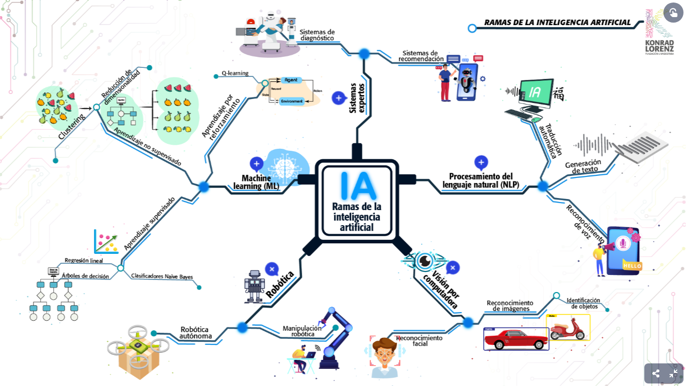

Iniciativas científicas, tecnológicas y de innovación del IIISI
Código: 23/C176-A-2022
Período: 01/01/2022 – 31/12/2025
Tipo: A
Dirección: Dra. Ing. Rosanna Costaguta
Desarrollo de herramientas colaborativas orientadas a entornos virtuales de enseñanza y aprendizaje, con foco en accesibilidad, interacción y eficiencia pedagógica.
Código: 23/C182-A-2022
Período: 01/01/2022 – 31/12/2025
Tipo: A
Dirección: Dra. Ing. Elena Durán
Co-Dirección: Mg. Ing. Margarita Álvarez
Investigación de modelos inteligentes y sistemas sensibles al contexto para resolver problemas complejos en educación y otros dominios mediante IA y computación ubicua.

Código: 23/C207-Bint-2024
Período: 01/01/2024 – 31/12/2025
Tipo: B Int.
Dirección: Dra. Melisa Gisselle Escañuela González
Co-Dirección: Dr. Maximiliano Celmo David Budán
Investigación teórica avanzada que vincula estructuras topológicas y categóricas con modelos de argumentación rebatible, abriendo nuevas perspectivas formales para el razonamiento.
Código: 23/C219-B-2025
Período: 01/01/2025 – 31/12/2026
Tipo: B
Dirección: Susana Isabel Herrera
Desarrollo de metodologías y herramientas que integren accesibilidad, inteligencia computacional y estándares de calidad en la ingeniería de software.
Código: 23/C222-Bint-2025
Período: 01/01/2025 – 31/12/2026
Tipo: B Int.
Dirección: Dr. Maximiliano Celmo David Budán
Co-Dirección: Paola Daniela Budán
Aplicación de modelos predictivos y sistemas inteligentes para brindar soluciones personalizadas a necesidades sociales y comunitarias, desde una perspectiva inclusiva.
Código: 23/C175
Período: 01/01/2021 – 31/12/2025
Tipo: A
Dirección: Mabel Sosa
Propuesta integral para mejorar la interacción y la experiencia de usuarios en plataformas educativas digitales, incorporando principios de usabilidad y diseño centrado en el usuario.